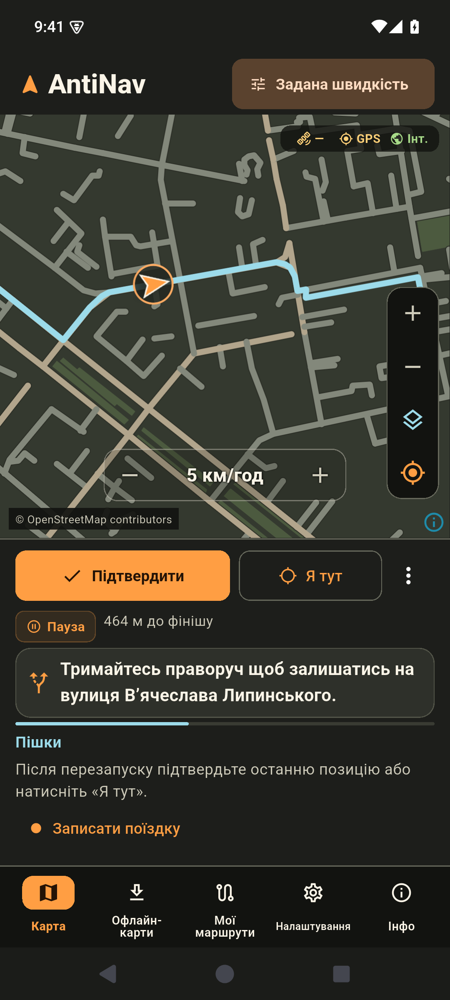

Карти областей
Завантажуйте потрібні регіони. Для Дніпропетровської та Запорізької областей доступний також супутниковий шар.
Android та iPhone
Завантажте карту області заздалегідь. AntiNav побудує автомобільний або пішохідний маршрут на телефоні, навіть коли інтернет зникне.
Отримати AntiNav
Завантажуйте потрібні регіони. Для Дніпропетровської та Запорізької областей доступний також супутниковий шар.
Обирайте геолокацію, швидкість авто з OBDLink CX або задану швидкість. Кнопка «Я тут» допомагає уточнити позицію.
Додавайте проміжні зупинки, записуйте поїздки й відкривайте збережені маршрути.
Перевіряємо номер версії…
Завантажте тестову збірку у форматі APK. Для першого завантаження карт потрібен інтернет і доступний каталог.
Завантажити APK Деталі випускуТестування через TestFlight
Надішліть у WhatsApp адресу iCloud, яку використовуєте на iPhone. Якщо для вас буде доступне місце, отримаєте запрошення до TestFlight.
Написати в WhatsApp